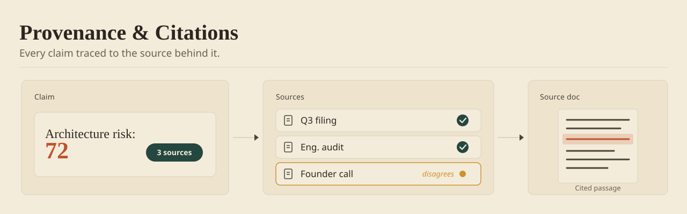

A large language model can write a fluent, confident claim about anything — that's exactly the problem. Provenance is what separates a generated sentence from evidence: grounding every claim in a cited source it retrieved (RAG), one click from the number to the document that produced it. When the stakes are real, people don't act on a well-written guess; they act on something they can open and check.

Put the source next to the claim
The instinct is to keep the interface clean: show the answer, tuck the evidence behind a "details" link. But a source one click away is a source nobody opens. Put the primary citation inline, beside the number it justifies, so the evidence and the claim are read together.
This is the difference between a system that asks for faith and one that offers collateral. A risk score that reads "72% — based on these three filings" is one a person can begin to trust; "72%" alone is a verdict they'll quietly override.
Try it — the pattern, live
The same live demo that runs in the book edition's field guide. Synthetic data; nothing leaves the page.
Let them open the original, unedited
A citation that can't be opened is decoration. The trail has to end in the actual artifact the model read — the filing, the ticket, the transcript — not a paraphrase of it. The moment a person can pull the source and see it themselves, the model stops being a black box and becomes a research assistant.
Heavy summarisation is the silent killer here. Compress the evidence too far and the trail goes cold; the person can't tell whether the model read the document carefully or skimmed it. Keep the path from claim to primary source short and intact.
Count the sources, and surface the dissent
Say how many sources back a number. "Three sources" reads very differently from "one source," and the person calibrates accordingly. A single-source claim should look more tentative than a well-corroborated one — the interface should carry that distinction.
Then surface disagreement honestly. If two sources support a conclusion and one contradicts it, show the outlier rather than averaging it away. The dissenting source is often where the real risk lives, and hiding it is how a confident-looking answer becomes an expensive one.
Implementation Checklist
- Render the primary source inline, next to the claim — not behind a "details" affordance.
- Make every citation openable: link to the real artifact, not a summary of it.
- Show the source count, and let a single-source claim look more tentative than a corroborated one.
- Surface the dissenting source instead of averaging it into the consensus.
- Watch a real user: can they get from the number to the document in one move?
Trade-offs by Approach
| Choice | Best For | Trade-off |
|---|---|---|
| Inline citation chips | Claims a reader will challenge on sight | Crowds dense layouts; needs disciplined sourcing |
| Drill-down drawer | Deep evidence without leaving the flow | One click of friction; drawer must open fast |
| Source count + dissent flag | Summary surfaces at a glance | A count can hide a weak source; flag the dissenter |
| Full document viewer | Auditors, regulators, sign-off moments | Heaviest to build; reserve for the highest stakes |
See This Pattern In Action
- Technical Due Diligence: a score had to carry a clean drill from summary to the source document before a partner would stand on it.
- AI-Assisted Due Diligence: sources sat beside the risk score, not buried behind it.
One pattern a month. The tradeoffs I paid for, plus the templates I use.
Citation chips slow scanning — if every claim is cited with equal weight, nothing stands out and users stop clicking any of them. Reserve full provenance for claims someone must defend to a third party; summarize the rest. Provenance is a gate for decisions, not wallpaper for paragraphs.